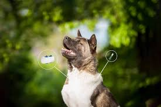

Did you know about chips for your dog?
A dog microchip is a small, electronic device that is implanted under a dog's skin to provide permanent identification.
Size: A microchip is about the size of a grain of rice
How it works: A microchip is activated by a scanner that emits radio waves, which then transmit the chip's identification number to the scanner
Where it's implanted: A microchip is usually implanted between a dog's shoulder blades
How it's implanted: The procedure is similar to a vaccine injection and doesn't require anesthesia
How it's used: A microchip's identification number is linked to the owner's contact information, which can help reunite a lost dog with its owner
How long it lasts: A microchip is designed to last for 25 years
How it's different from a GPS: A microchip is a permanent form of identification, while a GPS can be lost or require batteries
By Pavlo Balandiuk